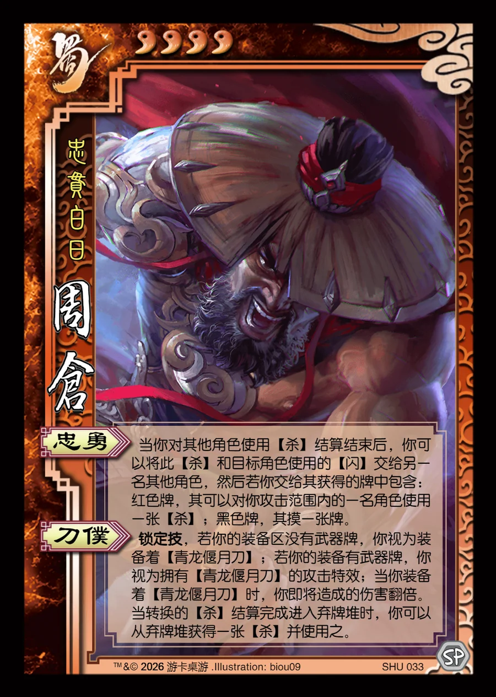

点击卡面查看大图
蜀
周仓
♥4忠贯白日
忠勇
当你对其他角色使用【杀】结算结束后，你可以将此【杀】和目标角色使用的【闪】交给另一名其他角色，然后若你交给其获得的牌中包含：红色牌，其可以对你攻击范围内的一名角色使用一张【杀】；黑色牌，其摸一张牌。
刀仆锁定技
锁定技，若你的装备区没有武器牌，你视为装备着【青龙偃月刀】；若你的装备有武器牌，你视为拥有【青龙偃月刀】的攻击特效；当你装备着【青龙偃月刀】时，你即将造成的伤害翻倍。当转换的【杀】结算完成进入弃牌堆时，你可以从弃牌堆获得一张【杀】并使用之。